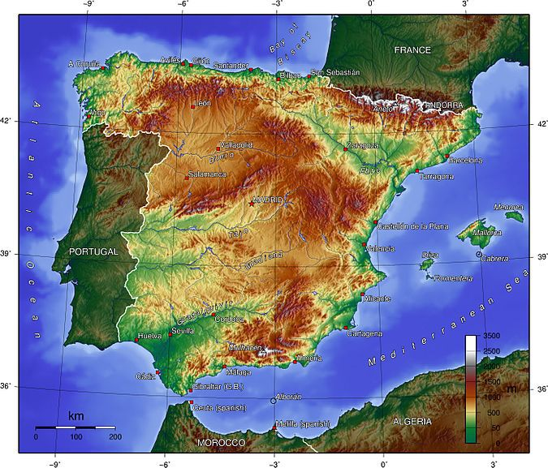
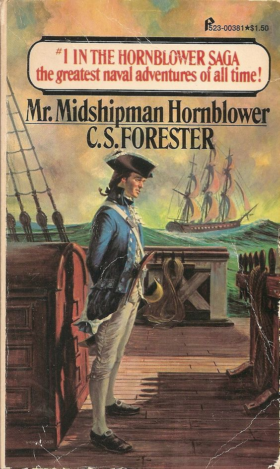
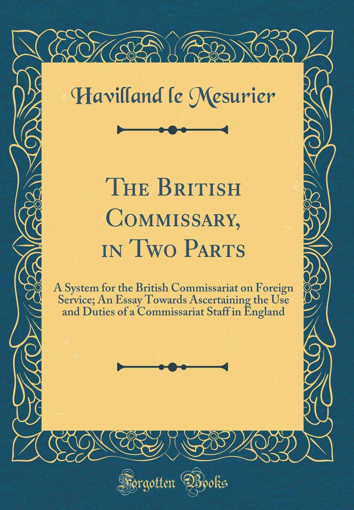
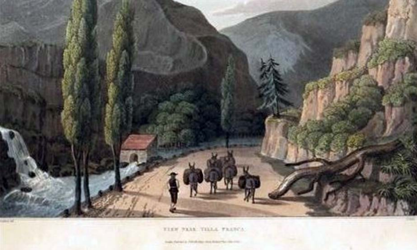
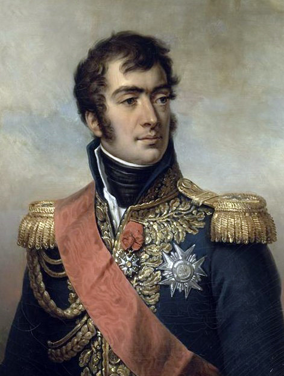

나폴레옹 시대의 병참부 이야기 (하편)
게시: 2019-02-18T06:30:00+09:00
웰링턴은 포르투갈에 상륙하자마자 곧 이베리아 반도의 지형적, 그리고 사회적 특수성이 영국은 물론 프랑스나 독일 등 기타 유럽 지역과는 확연히 차이가 난다는 것을 깨달았습니다. 가장 큰 특징으로, 제대로 된 길이 없었습니다 ! 이는 스페인의 침공 위협 때문에라도 스페인과의 교통로를 적극 개발하지 않았던 포르투갈의 특수성에도 기인했습니다만, 기본적으로는 포르투갈이나 스페인이나 모두 산업과 통상의 발달이 부진했다는 점에 원인이 있었습니다. 지역간에 거래를 할 상품이 없다보니 마차가 다닐 일도 없고, 마차가 다닐 일이 없으니 넓직한 길이 필요하지도 않았습니다. 게다가, 스페인은 지역 감정이 꽤 심한 나라여서 지방 간의 인적 왕래도 그다지 많지 않다보니, 더더욱 내륙 교통이 발달하지 못했습니다.
이렇게 열악한 교통망에 더해, 이베리아 반도는 유럽의 다른 지역과는 달리 상대적으로 건조한 편이라서 농업 생산량이 그렇게 풍요롭지는 않았습니다. 이탈리아나 독일의 농가들은 어지간한 농가의 창고문만 걷어차도 밀과 보리, 달걀이 쏟아져 나왔지만 포르투갈과 스페인은 그렇지 않았습니다. 특히 포르투갈은 척박한 스페인과 대비했을 때조차도 더 가난한 나라였습니다. 원래 현지 조달에 의존했던 프랑스군은 이탈리아나 독일에서도 쫄쫄 굶어야 하는 경우가 많았습니다. 그런데 온 지역이 이렇게 가난하다보니, 그야말로 먹고 살기가 어려웠지요.

(보시다시피 이베리아 반도의 상당 부분이 산지이거나 메마른 지대라서, 농업에 적절한 곳은 그렇게 많지 않습니다. 지금도 스페인은 올리브유 생산이 매우 활발한 나라입니다만, 그건 반대로 곡물 농사에는 그다지 적합하지 않은 지대라는 반증입니다.)
현지 조달이 어려우면 본국에서 실어와야 합니다. 그런데 여기서 이베리아 반도의 열악한 내륙 교통망이 발목을 잡습니다. 가뜩이나 프랑스 본토와 스페인 사이에 피레네 산맥이 있는 것도 장애가 되었는데, 해안길을 통해서라도 수송대가 이베리아 반도에 진입한 뒤부터가 진짜 고생길이었던 것입니다. 세계 지도에서 보면 스페인은 프랑스나 독일에 비하면 별로 큰 땅덩어리처럼 보이지 않습니다만 그건 메르카토르 도법의 특성상 남쪽에 있는 땅이 좁아보이는 것입니다. 프랑스가 64만 평방 km인 것에 비해 스페인이 50만 평방 km으로서, 스페인은 굉장히 넓은 국토를 가지고 있습니다. 그리고 평탄한 프랑스나 독일에 비해 높은 산맥과 언덕이 많은 땅이지요. 길도 제대로 없는 그런 땅을 가로질러 20만 대군이 먹을 식량을 마차로 수송한다는 것은 엄청난 도전이었습니다. 그리고 그나마 그런 도전은 스페인의 게릴라들때문에 사실상 불가능했습니다. 이런 경우, 이베리아 땅이 반도이니만큼 그냥 해상으로 수송한 뒤 내륙으로 운송하면 훨씬 일이 쉬워질 것입니다. 문제는 영국의 저 망할 로열 네이비 때문에 그게 불가능했다는 것이었습니다.
결국 이베리아 반도에 들어온 프랑스군은 어쩔 수 없이 현지 조달에 의존해야 했는데, 이는 수탈당하는 스페인 민중들에게도 큰 비극이었지만 약탈하는 프랑스군에게도 무척 고단한 일이었습니다. 만명 단위의 대군이 한 곳에 오래 머무르면 그 일대의 식량이 순식간에 바닥을 드러내게 됩니다. 프랑스군이 먹어치우는 것도 있지만, 그 일대의 농민들이 식량을 감추거나 떠나버리기 때문이었지요. 결국 프랑스군은 한 곳에서 1주일 이상 머무르는 것이 불가능했습니다. 굶지 않으려고 먹을 것을 찾아 끊임없이 유랑하는 거지떼 내지는 떼강도 신세가 된 것이지요. 군사 작전이라는 것에서 이동이 잦을 수는 있지만, 그건 어디까지나 적을 압박하거나 반대로 피하기 위해서이지 굶지 않기 위해서 이동하는 군대에게는 작전의 유연성이 크게 떨어질 수 밖에 없었습니다. 결국 스페인에 투입된 근 20만에 가까운 프랑스군 대부분은 먹을 것을 찾아 이동 중이거나, 분산되어 먹을 것을 약탈 중이거나, 혹은 신기루 같은 게릴라들의 뒤를 쫓아 산 속을 헤매면서 세월을 낭비해야 했고, 실제로 영국군이나 스페인군과의 전투에 투입되는 프랑스군은 그 1/4 정도에 불과했습니다.
웰링턴은 유능한 지휘관답게, 이 사실을 재빨리 알아차렸습니다. 그는 상대적으로 소수인 영국군이 10만 단위의 대군으로 되어 있는 프랑스군을 상대하기 위해서는 군량 조달을 가장 유용한 무기로 삼아야 한다고 정확하게 판단했습니다. 하지만 그에게도 조건은 비슷했습니다. 길이 형편 없는 것도 똑같았고, 바닷길을 이용할 수 없는 것도 같았습니다. 스페인의 주요 항구들이 대부분 프랑스군 손아귀에 있었으니까요. 오히려 식량을 수송해올 거리는 영국 측이 훨씬 멀었습니다. 영국과 포르투갈 사이의 거리가 프랑스와 스페인의 거리보다 멀었고, 그나마 영국 본토도 대륙 봉쇄령으로 인해 식량난이 심해져서 밀과 빵값이 오르는 등 난리가 아니었기 때문에 대규모로 식량을 포르투갈에 보낼 형편이 아니었습니다. 그래서 영국은 그야말로 닥치는 대로, 미국과 남미, 오스만 투르크, 심지어 북아프리카 모로코 등지에서 식량을 구매하여 포르투갈로 실어날랐습니다.

(혼블로워 시리즈 중에서 (실제 소설이 씌여진 순서는 아니지만) 첫번째 편인 Mr. Midmanship Hornblower는 혼블러워의 사관후보생 시절을 그린 옴니버스식 소설입니다. 그 중 한 에피소드가, 식량으로 소를 사러 북아프리카 이슬람 지역에 들어갔다가 전염병에 휘말려 격리되는 내용이었습니다.)
영국군 병참부에게 진짜 고난은 포르투갈 해변에 온갖 보급품이 잔뜩 쌓이는 바로 그 순간부터였습니다. 1808년 8월, 당시 쥐노가 점거하고 있던 포르투갈을 탈환하기 위해 웰슬리가 포르투갈 마세이라(Maceira) 만에 상륙했을 때, 전에 언급한 샤우만(August Friedrich Ludolph Schaumann)이라는 이름의 독일 출신 병참 장교에게 주어진 임무는 터무니 없는 것이었습니다. 아무 조수도 부하도 없이 혼자서, 그저 공책 한권을 주고는 해변 여기저기에 야적된 수많은 보급품 더미를 조사하여 목록을 작성한 뒤 이제 내륙으로 진격할 영국군 부대를 따라 수송할 준비를 하라는 것이었습니다.
샤우만이 그런 업무에 숙련된 병참 장교였는가 하면 그게 또 전혀 그렇지 않았습니다. 그는 프랑스군의 하노버 침공 이전에 하노버 군에서 몇년 장교로 복무했다가 퇴역한 뒤 아버지의 사업을 이어받기 위해 장부 작성 등의 업무를 좀 해보았을 뿐이었습니다. 그는 바로 몇 달 전까지만 해도 영국군 소속 독일군 전투 부대인 KGL 제7 연대 소속의 평범한 장교였고, KGL 장교로서는 승진과 연금의 비전이 없다고 보고 일당 7.5 실링(현재 가치로 대략 9만5천원)의 급여를 위해 병참 장교로 자리를 옮긴 아마추어에 불과했습니다.
그런 그에게 아무런 지침이나 교본이 없었는가 하면 그건 아니었습니다. 그에게는 'The British Commissary'(영국 병참부)라는 멋대가리없는 제목의 책이 한권 있었는데, 이는 메서리어(Havilland le Mesurier)라는 이름의 영국인이 쓴 것으로서, 당시 영국군 병참부 직원들에게는 수학의 정석이나 다름없는 책이었습니다. 메서리어는 원래 해외 무역업자였다가 프랑스 혁명정부와 영국 사이에 전쟁이 발발하자 1793년부터 네덜란드 방면 영국군 원정대에 딸린 병참 장교 역할을 했습니다. 1794년에서 그 다음해까지 벌어진 이 방면 전투에서 영국군은 형편없는 성과만 냈을 뿐이었지만, 정말 아무 준비도 안 되어있던 영국군 병참부는 이 난리통 속에서 그나마 나름 경험과 수완을 쌓았던 모양입니다. 그 이후에도 메서리어는 병참부 장교직을 사직했다 복직했다 했는데, 영국군 병참부에 대한 그의 가장 큰 공헌은 저 'The British Commissary'라는 책을 저술한 것이었습니다.

(메서리어의 'The British Commissary'입니다. 아마존에서 판매하는 책입니다만, 저는 못 읽어보았습니다.)
그런 교본이 있음에도 불구하고 스페인-포르투갈에서의 영국군 병참부는 초기에 극심한 혼란에 빠질 수 밖에 없었습니다. 병참부는 힘만 들고 아무도 존중하지 않는 노동일을 하는 부서라는 인식이 강하고 실제로도 그랬던 것만큼, 빛나는 전통이고 뭐고가 없었던 것입니다. 달랑 책 한 권을 손에 든 경험 없는 병참부 장교들도 막대한 보급품 앞에서 어쩔 줄을 몰랐습니다. 사실은 병참부 소속 장교들은 진짜 장교도 아니었습니다. 병참부는 군의 일부가 아니라, 재무부의 감독과 지시를 받는 파견직 민간인들이었거든요. 따라서 deputy commissary-general이니 assistant deputy commissary-general이니 하는 것들은 진짜 장군이 아닌 것은 당연한 것이었고 말단 사병들이 경례를 할 필요도 없는 그야말로 민간인 정부 관리에 불과했습니다. 그런데도 이들은 장교들과 엇비슷한, 그러나 분명히 차이가 나는 군복을 입었을 뿐만 아니라 권총과 군도와 같은 무기도 휴대했습니다. 병사들은 '저것들은 장교 비슷한 군복은 입었지만 장교가 아니며, 싸움이 벌어지면 우리와 함께 싸우지 않고 후방으로 도망친다'라고 생각하고 이들을 무시했습니다. 그러나 실제 전투가 벌어지면 적지 않은 경우 무기를 들고 프랑스군과의 전투에 참여하기도 했습니다.
이들은 이처럼 아군에게 저평가되었지만, 사실 이들의 업무는 제1선 장교들보다 훨씬 복잡하고 어려우며 개인적인 창의성과 수완, 용기와 기지를 발휘해야 해결할 수 있는 것들이었습니다. 전투 현장에서 대포알과 머스켓 탄환에 노출된 채 병사들을 이끌고 전진할 때, 멋진 붉은 제복을 입은 장교가 부릴 수 있는 재주는 사실 그리 많지 않습니다. 그저 운이 좋은 자는 살아서 전진할 수 있는 것이고, 운이 나쁜 자는 대포알에 두동강이 나는 것이지요. 그러나 진흙탕 길에 바퀴가 빠진 무거운 수레를 어떻게 빼낼 것인지, 수송에 3일 걸리는 건빵 자루 더미들을 어떻게 2일 안에 최전방까지 나를 것인지, 가진 돈은 50쉴링 밖에 없는데 일당 1쉴링을 요구하는 노새 30마리를 어떻게 3일 동안 빌릴 것인지 등은 그야말로 담당 직원의 역량에 따라 성공과 실패가 결정되는 일이었습니다. 게다가 그 성공과 실패에 따라 전투의 승패가 뒤바뀔 수 있는 일이었지요. 그런데도 그렇게 천신만고 끝에 밀가루 자루를 실은 노새들을 끌고 최전선 부대에 도착한 병참부 장교에게 주어지는 것은 '왜 이리 늦게 왔냐' '왜 보급품이 이것 밖에 없는가' 등의 핀잔인 경우가 대부분이었습니다.
또 병참부는 체계화가 꼭 필요한, 나름대로 무척 섬세하고 정밀한 병과입니다. 가령 포르투갈을 통해 상륙하는 영국군 병사들의 행군에 대해 웰링턴이 병참감(Commissary General)인 케네디(Sir Robert Hugh Kennedy)에게 보낸 지시 내용에는 다음과 같은 사항이 들어있습니다.
"상륙하는 부대는 각자 4일치의 빵과 2일치의 고기를 휴대한다. 병사들이 휴대하는 빵 외에, 1만 명의 3일치 빵을 수송해야 하는데, 가능하다면 노새를 이용해 날라야 한다. 각 노새에는 2개의 자루, 즉 224파운드의 짐을 실을 수 있으므로 전체를 위해서는 130마리의 노새가 필요하다."
이 계산은 꽤 합리적입니다. 당시 영국군 병사들의 배식량은 하루에 빵 1파운드였는데, 1만 명의 3일치라면 3만 파운드입니다. 224파운드를 실을 수 있는 노새를 130마리 동원한다면 224 * 130 = 29,120 파운드이므로, 1인당 0.97 파운드씩의 빵을 3일간 보급할 수 있습니다.
그러나 사실 이 계산은 잘못된 것이었습니다. 노새가 먹을 사료는 계산에 넣지 않았쟎습니까 ? 노새는 하루에 10파운드의 곡물을 먹어야 했고, 병사들이 3일 행군하는 것을 따라 나섰다가 다시 보급품이 쌓여있는 항구로 되돌아오려면 왕복에 6일이 걸렸으므로, 노새 1마리가 싣는 224 파운드 중 최소 60파운드의 곡물은 노새가 먹어치우게 되어 있었습니다. 즉, 130마리의 노새의 실제 수송량은 29,120 파운드가 아니라 21,320 파운드였고, 병사들은 3일간 0.97 파운드가 아닌 0.7 파운드라는 부실한 양의 빵을 받아야 했습니다.

(도로망이 형편없었던 스페인과 포르투갈에서는 노새들을 이용한 보급품 수송이 정말 최적이었습니다. 처음에는 미숙하기 짝이 없었던 영국군 병참부도 2년 정도에 걸쳐 노새꾼들과 노새들을 고용하여 운용을 하면서 경험이 쌓여, 그 고용 및 활용, 급여 지급 등 온갖 자질구레한 잡무가 거의 완벽에 가까운 상태가 되었다고 합니다.)
실은 총사령관인 웰링턴 장군이 이런 노새 한마리가 몇 파운드의 짐을 싣을 수 있으며 그래서 몇 마리의 노새가 필요한지에 대해 계산하여 병참감에게 보내는 것 자체가 좀 이상한 일이기는 합니다. 이런 편지는 오히려 반대로 병참감이 원정군 사령관에게 보고하는 형태로 보내는 것이 맞겠지요. 당시 웰링턴은 병참부 장교들과 서기들의 무능력에 대해 짜증이 잔뜩 난 상황이었는데, 그럴 수 밖에 없었습니다. 당시 샤우만을 포함한 대부분의 병참 장교들이 별다른 병참 업무 경험도 없이 새로 채용된 사람들이다보니 워낙 아는 것들이 없었던 것입니다.
그럼에도 불구하고 영국군 병참부는 웰링턴 하에서 혁혁한 성과를 올렸습니다. 총사령관 웰링턴이 직접 나서서 '가장 신경써야 하는 부서'라고 지목하면서, 저렇게 노새 몇 마리가 필요하다는 계산까지 세세히 해줄 정도였으니 당연히 많은 개선이 이루어졌을 것입니다. 특히 1810년 10월부터 다음해 초까지의 대치 끝에 토헤스 베드하스(Torres Vedras) 방어선 앞에 마세나의 프랑스군을 후퇴시킨 승리는 사전에 충분한 군량을 비축해놓은 영국군 병참부가 아니었다면 절대 얻을 수 없었을 것입니다.
물론 당시에 아무도 병참부의 공로를 알아주지 않았지요. 이 사실은 웰링턴 휘하 어지간한 장군들에 대해서는 위키피디아 등의 인터넷 사이트에 많은 정보가 있는 것에 비해, 웰링턴 휘하의 전체 병참부 책임자였던 케네디(Sir Robert Hugh Kennedy)에 대해서는 정말 정보가 없다는 것으로도 반증됩니다. 오히려 영국군 병참부의 위력과 중요성을 잘 알고 두려워했던 것은 적군인 프랑스군이었습니다. 1812년 웰링턴과 대치했던 마르몽(Marmont) 원수는 나폴레옹에게 이와 같은 편지를 썼습니다.
"웰링턴은 제게 보급품이 전혀 없다는 것을 잘 알고 있습니다. 그리고 이 지역의 광활한 척박함에 대해서도 훤히 꿰뚫고 있습니다."

(마르몽은 유난히 영국군의 노새 부대에 대해 넋두리를 많이 늘어놓았습니다. 1811년에도 그는 나폴레옹의 참모장 베르티에에게 편지를 써서 '영국군은 노새 1만2천 마리를 이용하여 너무나 쉽게 이동한다, 그러니 내게 단 1천2백 마리라도 노새를 좀 공급해달라'는 요청을 하기도 했습니다.)
개성을 가지고 사람과 소통하는 용들이 등장하는 나오미 노빅의 나폴레옹 전쟁을 배경으로 한 판타지 소설 '테메레르'에 대해 전에 언급했던 적이 있지요. 대포의 시대라고 해도 그런 거대한 용들 수백 마리로 구성된 군대가 있다면 아마 천하무적이었을 것입니다. 그러나 현실적으로 그런 용은 존재할 수 없습니다. 그런 거대한 용들에게 먹일 것이 없기 때문입니다. 나폴레옹의 그랑다르메(Grande Armee)도 일종의 용이었습니다. 그 대군을 일거에 밀어넣으면 스페인 정도야 순식간에 휩쓸어버릴 수 있었을 것입니다. 그러나 그 대군을 어떻게 먹일 것인가에 대한 답이 없어서 그렇게 하지 못한 것이지요. 영국군이 소수로도 내노라하는 나폴레옹의 부하들을 차례로 꺾고 스페인에서 프랑스군을 몰아낸 것은 바로 그 문제를 잘 해결했기 때문이었고, 그 핵심에는 영국의 병참부가 있었습니다.
Source : The Duke Of Wellington And The Supply System During The Peninsular War, by Major Troy T. Kirby
Tracing the Biscuit: The British Commissariat in tite Peninsular War, by William Reid
On The Road With Wellington, by August Ludolf Friedrich Schaumann
https://de.wikipedia.org/wiki/August_Friedrich_Ludolph_Schaumann
https://www.britannica.com/topic/logistics-military/Historical-development
https://en.wikipedia.org/wiki/Military_logistics
https://en.wikipedia.org/wiki/Bastion_fort
https://en.wikipedia.org/wiki/Glacis
https://en.wikipedia.org/wiki/Havilland_Le_Mesurier